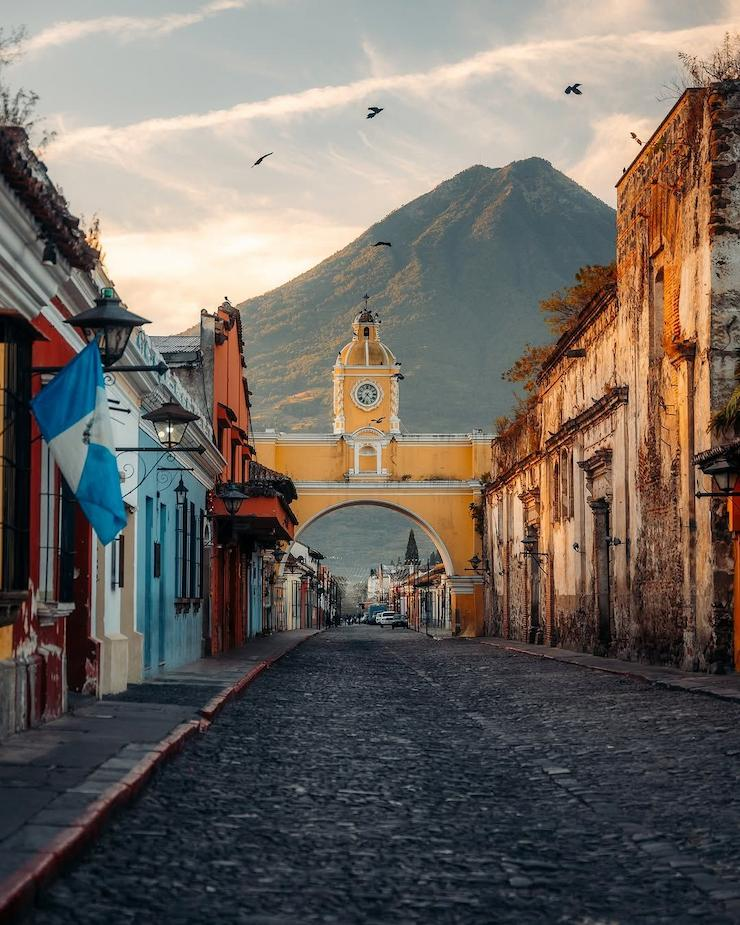

Scarlett Perez Silva
About Me
Hello! My name is Scarlett Perez Silva, and I am from Guatemala. I am currently studying Web Development through BYU-Idaho. I enjoy designing websites, learning new technologies, and solving problems through programming. Outside of school, I enjoy music, Formula 1, serving others, and spending time with family and friends. My goal is to continue developing my skills as a web developer while creating accessible and engaging user experiences.
Guatemala

Guatemala is located in Central America and is known for its rich Mayan heritage, breathtaking volcanoes, colorful traditions, and beautiful natural landscapes. It is home to places such as Tikal National Park and Lake Atitlán, making it one of the most culturally and geographically diverse countries in the region.